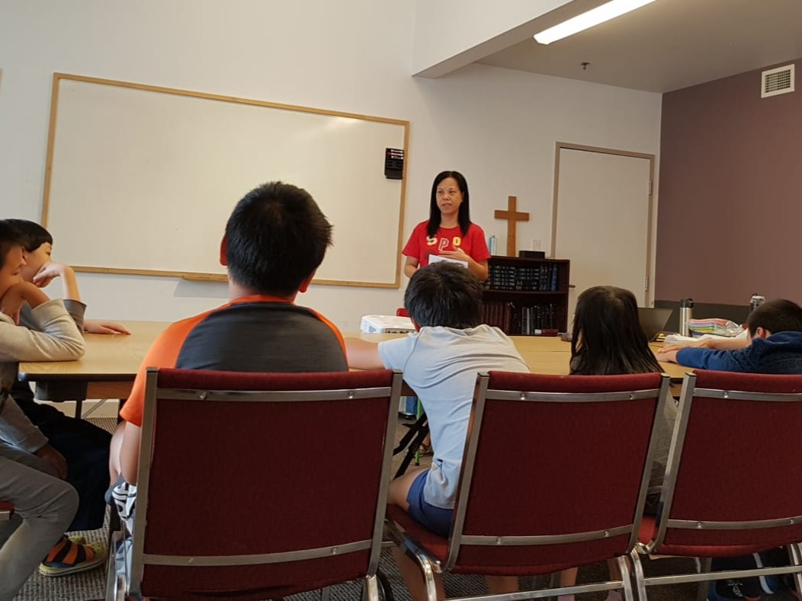
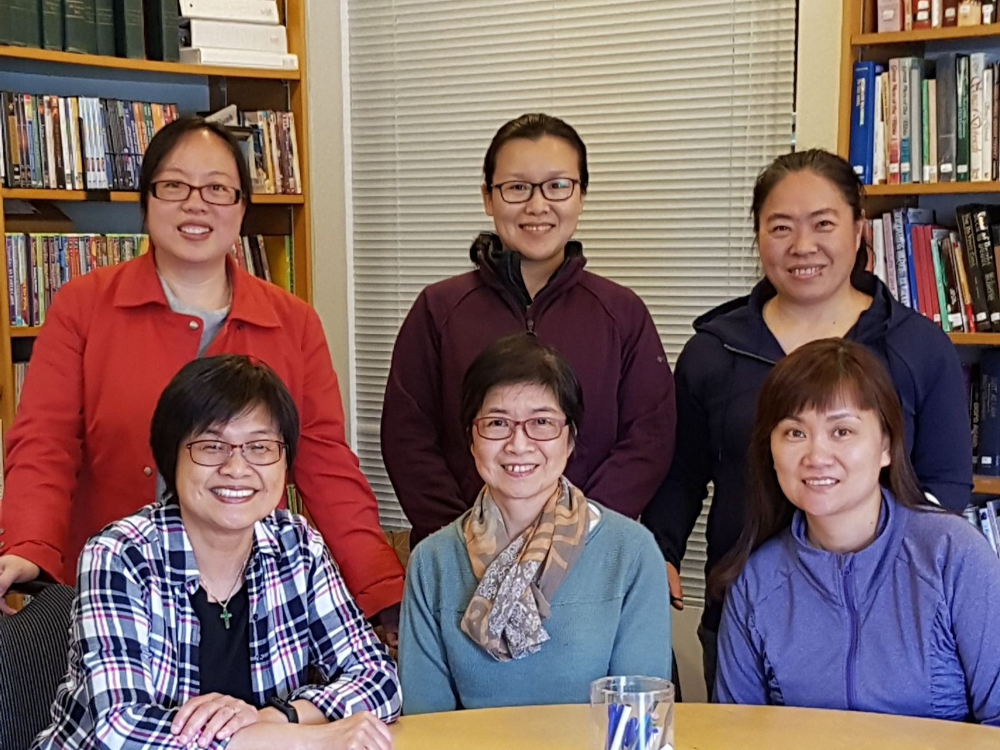

Christian Respite Family Service is first and foremost a Christian-based organization, as such we are transparent about the faith aspect in our work, taking opportunities to promote and share the gospel with the families we serve.
We highly encourage families to join us in our ministry programs to experience a time of worship, bible stories, and games. For adults and parents, we provide consultation and spiritual guidance.

A significant portion of our ministry and vision revolves around support and outreach for children. They are the next generation of believers that will ultimately shape the future.
The Children Fellowship group is designed to offer kids the opportunity to meet new friends, engage in discussions, learn bible stories, and participate in creative and fun games. Snacks are also provided!
Time: Every Tuesday. September-June (3:30-4:30pm)
Location: Online sessions on Zoom
View our scheduleCARE Group functions as a support circle offered to adults and parents who speak English, Cantonese or Mandarin. Adult leaders lead the group in bible studies, provide advice and consultations, offer weekly check-ins and provide transportation to and from church. They are experienced in dealing with relationship and family issues, and readily available if you are looking for someone to support you over the phone or in person throughout the week. We also offer basic English language education.
Time: Every Thursday. September-June (10am-11am)
Location: Online sessions on Zoom.
View our schedule